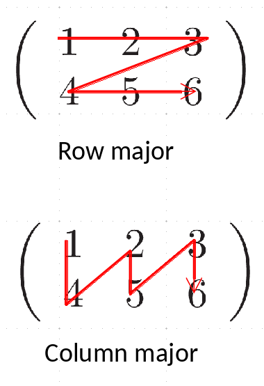

NumPy
Contents
NumPy¶
this notebook is based on the SciPy NumPy tutorial
Note that the traditional way to import numpy is to rename it np. This saves on typing and makes your code a little more compact.
import numpy as np
NumPy provides a multidimensional array class as well as a large number of functions that operate on arrays.
NumPy arrays allow you to write fast (optimized) code that works on arrays of data. To do this, there are some restrictions on arrays:
all elements are of the same data type (e.g. float)
the size of the array is fixed in memory, and specified when you create the array (e.g., you cannot grow the array like you do with lists)
The nice part is that arithmetic operations work on entire arrays—this means that you can avoid writing loops in python (which tend to be slow). Instead the “looping” is done in the underlying compiled code
Array Creation and Properties¶
There are a lot of ways to create arrays. Let’s look at a few
Here we create an array using arange and then change its shape to be 3 rows and 5 columns. Note the row-major ordering—you’ll see that the rows are together in the inner [] (more on this in a bit)
a = np.arange(15)
a
array([ 0, 1, 2, 3, 4, 5, 6, 7, 8, 9, 10, 11, 12, 13, 14])
a = np.arange(15).reshape(3,5)
print(a)
[[ 0 1 2 3 4]
[ 5 6 7 8 9]
[10 11 12 13 14]]
an array is an object of the ndarray class, and it has methods that know how to work on the array data. Here, .reshape() is one of the many methods.
A NumPy array has a lot of meta-data associated with it describing its shape, datatype, etc.
print(a.ndim)
print(a.shape)
print(a.size)
print(a.dtype)
print(a.itemsize)
print(type(a))
2
(3, 5)
15
int64
8
<class 'numpy.ndarray'>
#help(a)
we can also create an array from a list
b = np.array( [1.0, 2.0, 3.0, 4.0] )
print(b)
print(b.dtype)
print(type(b))
[1. 2. 3. 4.]
float64
<class 'numpy.ndarray'>
we can create a multi-dimensional array of a specified size initialized all to 0 easily, using the zeros() function.
b = np.zeros((10,8))
b
array([[0., 0., 0., 0., 0., 0., 0., 0.],
[0., 0., 0., 0., 0., 0., 0., 0.],
[0., 0., 0., 0., 0., 0., 0., 0.],
[0., 0., 0., 0., 0., 0., 0., 0.],
[0., 0., 0., 0., 0., 0., 0., 0.],
[0., 0., 0., 0., 0., 0., 0., 0.],
[0., 0., 0., 0., 0., 0., 0., 0.],
[0., 0., 0., 0., 0., 0., 0., 0.],
[0., 0., 0., 0., 0., 0., 0., 0.],
[0., 0., 0., 0., 0., 0., 0., 0.]])
There is also an analogous ones() and empty() array routine. Note that here we can explicitly set the datatype for the array in this function if we wish.
Unlike lists in python, all of the elements of a numpy array are of the same datatype
c = np.eye(10, dtype=np.float64)
c
array([[1., 0., 0., 0., 0., 0., 0., 0., 0., 0.],
[0., 1., 0., 0., 0., 0., 0., 0., 0., 0.],
[0., 0., 1., 0., 0., 0., 0., 0., 0., 0.],
[0., 0., 0., 1., 0., 0., 0., 0., 0., 0.],
[0., 0., 0., 0., 1., 0., 0., 0., 0., 0.],
[0., 0., 0., 0., 0., 1., 0., 0., 0., 0.],
[0., 0., 0., 0., 0., 0., 1., 0., 0., 0.],
[0., 0., 0., 0., 0., 0., 0., 1., 0., 0.],
[0., 0., 0., 0., 0., 0., 0., 0., 1., 0.],
[0., 0., 0., 0., 0., 0., 0., 0., 0., 1.]])
linspace creates an array with evenly space numbers. The endpoint optional argument specifies whether the upper range is in the array or not
d = np.linspace(0, 1, 10, endpoint=False)
print(d)
[0. 0.1 0.2 0.3 0.4 0.5 0.6 0.7 0.8 0.9]
Quick Exercise:
Analogous to linspace(), there is a logspace() function that creates an array with elements equally spaced in log. Use help(np.logspace) to see the arguments, and create an array with 10 elements from \(10^{-6}\) to \(10^3\).
we can also initialize an array based on a function
f = np.fromfunction(lambda i, j: i + j, (3, 3), dtype=int)
f
array([[0, 1, 2],
[1, 2, 3],
[2, 3, 4]])
Array Operations¶
most operations (+, -, *, /) will work on an entire array at once, element-by-element.
Note that that the multiplication operator is not a matrix multiply (there is a new operator in python 3.5+, @, to do matrix multiplicaiton.
Let’s create a simply array to start with
a = np.arange(12).reshape(3,4)
print(a)
[[ 0 1 2 3]
[ 4 5 6 7]
[ 8 9 10 11]]
Multiplication by a scalar multiplies every element
a*2
array([[ 0, 2, 4, 6],
[ 8, 10, 12, 14],
[16, 18, 20, 22]])
adding two arrays adds element-by-element
a + a
array([[ 0, 2, 4, 6],
[ 8, 10, 12, 14],
[16, 18, 20, 22]])
multiplying two arrays multiplies element-by-element
a*a
array([[ 0, 1, 4, 9],
[ 16, 25, 36, 49],
[ 64, 81, 100, 121]])
We can think of our 2-d array as a 3 x 5 matrix (3 rows, 5 columns). We can take the transpose to geta 5 x 3 matrix, and then we can do a matrix multiplication
Quick Exercise:
What do you think 1./a will do? Try it and see
We can do some basic linear algebra operations on arrays. The operator @ is a matrix multiplication / dot-product operator
b = a.transpose()
b
array([[ 0, 4, 8],
[ 1, 5, 9],
[ 2, 6, 10],
[ 3, 7, 11]])
a @ b
array([[ 14, 38, 62],
[ 38, 126, 214],
[ 62, 214, 366]])
We can sum the elements of an array:
a.sum()
66
Quick Exercise:
sum() takes an optional argument, axis=N, where N is the axis to sum over. Sum the elements of a across rows to create an array with just the sum along each column of a.
We can also easily get the extrema
print(a.min(), a.max())
0 11
universal functions¶
universal functions work element-by-element. Let’s create a new array scaled by pi
b = a*np.pi/12.0
print(b)
[[0. 0.26179939 0.52359878 0.78539816]
[1.04719755 1.30899694 1.57079633 1.83259571]
[2.0943951 2.35619449 2.61799388 2.87979327]]
c = np.cos(b)
print(c)
[[ 1.00000000e+00 9.65925826e-01 8.66025404e-01 7.07106781e-01]
[ 5.00000000e-01 2.58819045e-01 6.12323400e-17 -2.58819045e-01]
[-5.00000000e-01 -7.07106781e-01 -8.66025404e-01 -9.65925826e-01]]
d = b + c
print(d)
[[1. 1.22772521 1.38962418 1.49250494]
[1.54719755 1.56781598 1.57079633 1.57377667]
[1.5943951 1.64908771 1.75196847 1.91386744]]
Quick Exercise:
We will often want to write our own function that operates on an array and returns a new array. We can do this just like we did with functions previously—the key is to use the methods from the np module to do any operations, since they work on, and return, arrays.
Write a simple function that returns \(\sin(2\pi x)\) for an input array x. Then test it
by passing in an array x that you create via linspace()
Slicing¶
slicing works very similarly to how we saw with strings. Remember, python uses 0-based indexing

Let’s create this array from the image:
a = np.arange(9)
a
array([0, 1, 2, 3, 4, 5, 6, 7, 8])
Now look at accessing a single element vs. a range (using slicing)
Giving a single (0-based) index just references a single value
a[2]
2
Giving a range uses the range of the edges to return the values
print(a[2:3])
[2]
a[2:4]
array([2, 3])
The : can be used to specify all of the elements in that dimension
a[:]
array([0, 1, 2, 3, 4, 5, 6, 7, 8])
Multidimensional Arrays¶
Multidimensional arrays are stored in a contiguous space in memory – this means that the columns / rows need to be unraveled (flattened) so that it can be thought of as a single one-dimensional array. Different programming languages do this via different conventions:

Storage order:
Python/C use row-major storage: rows are stored one after the other
Fortran/matlab use column-major storage: columns are stored one after another
The ordering matters when
passing arrays between languages (we’ll talk about this later this semester)
looping over arrays – you want to access elements that are next to one-another in memory
e.g, in Fortran:
double precision :: A(M,N) do j = 1, N do i = 1, M A(i,j) = … enddo enddoin C
double A[M][N]; for (i = 0; i < M; i++) { for (j = 0; j < N; j++) { A[i][j] = … } }
In python, using NumPy, we’ll try to avoid explicit loops over elements as much as possible
Let’s look at multidimensional arrays:
a = np.arange(15).reshape(3,5)
a
array([[ 0, 1, 2, 3, 4],
[ 5, 6, 7, 8, 9],
[10, 11, 12, 13, 14]])
Notice that the output of a shows the row-major storage. The rows are grouped together in the inner [...]
Giving a single index (0-based) for each dimension just references a single value in the array
a[1,1]
6
Doing slices will access a range of elements. Think of the start and stop in the slice as referencing the left-edge of the slots in the array.
a[0:2,0:2]
array([[0, 1],
[5, 6]])
Access a specific column
a[:,1]
array([ 1, 6, 11])
Sometimes we want a one-dimensional view into the array – here we see the memory layout (row-major) more explicitly
a.flatten()
array([ 0, 1, 2, 3, 4, 5, 6, 7, 8, 9, 10, 11, 12, 13, 14])
we can also iterate – this is done over the first axis (rows)
for row in a:
print(row)
[0 1 2 3 4]
[5 6 7 8 9]
[10 11 12 13 14]
or element by element
for e in a.flat:
print(e)
0
1
2
3
4
5
6
7
8
9
10
11
12
13
14
Generally speaking, we want to avoid looping over the elements of an array in python—this is slow. Instead we want to write and use functions that operate on the entire array at once.
Quick Exercise:
Consider the array defined as:
q = np.array([[1, 2, 3, 2, 1],
[2, 4, 4, 4, 2],
[3, 4, 4, 4, 3],
[2, 4, 4, 4, 2],
[1, 2, 3, 2, 1]])
using slice notation, create an array that consists of only the
4’s inq(this will be called a view, as we’ll see shortly)zero out all of the elements in your view
how does
qchange?
Copying Arrays¶
simply using “=” does not make a copy, but much like with lists, you will just have multiple names pointing to the same ndarray object
Therefore, we need to understand if two arrays, A and B point to:
the same array, including shape and data/memory space
the same data/memory space, but perhaps different shapes (a view)
a separate cpy of the data (i.e. stored completely separately in memory)
All of these are possible:
B = Athis is assignment. No copy is made.
AandBpoint to the same data in memory and share the same shape, etc. They are just two different labels for the same object in memoryB = A[:]this is a view or shallow copy. The shape info for A and B are stored independently, but both point to the same memory location for data
B = A.copy()this is a deep copy. A completely separate object will be created in memory, with a completely separate location in memory.
Let’s look at examples
a = np.arange(10)
print(a)
[0 1 2 3 4 5 6 7 8 9]
Here is assignment—we can just use the is operator to test for equality
b = a
b is a
True
Since b and a are the same, changes to the shape of one are reflected in the other—no copy is made.
b.shape = (2, 5)
print(b)
a.shape
[[0 1 2 3 4]
[5 6 7 8 9]]
(2, 5)
b is a
True
print(a)
[[0 1 2 3 4]
[5 6 7 8 9]]
a shallow copy creates a new view into the array—the data is the same, but the array properties can be different
a = np.arange(12)
c = a[:]
a.shape = (3,4)
print(a)
print(c)
[[ 0 1 2 3]
[ 4 5 6 7]
[ 8 9 10 11]]
[ 0 1 2 3 4 5 6 7 8 9 10 11]
since the underlying data is the same memory, changing an element of one is reflected in the other
c[1] = -1
print(a)
[[ 0 -1 2 3]
[ 4 5 6 7]
[ 8 9 10 11]]
Even slices into an array are just views, still pointing to the same memory
d = c[3:8]
print(d)
[3 4 5 6 7]
d[:] = 0
print(a)
print(c)
print(d)
[[ 0 -1 2 0]
[ 0 0 0 0]
[ 8 9 10 11]]
[ 0 -1 2 0 0 0 0 0 8 9 10 11]
[0 0 0 0 0]
There are lots of ways to inquire if two arrays are the same, views, own their own data, etc
print(c is a)
print(c.base is a)
print(c.flags.owndata)
print(a.flags.owndata)
False
True
False
True
to make a copy of the data of the array that you can deal with independently of the original, you need a deep copy
d = a.copy()
d[:,:] = 0.0
print(a)
print(d)
[[ 0 -1 2 0]
[ 0 0 0 0]
[ 8 9 10 11]]
[[0 0 0 0]
[0 0 0 0]
[0 0 0 0]]
Boolean Indexing¶
There are lots of fun ways to index arrays to access only those elements that meet a certain condition
a = np.arange(12).reshape(3,4)
a
array([[ 0, 1, 2, 3],
[ 4, 5, 6, 7],
[ 8, 9, 10, 11]])
Here we set all the elements in the array that are > 4 to zero
a[a > 4] = 0
a
array([[0, 1, 2, 3],
[4, 0, 0, 0],
[0, 0, 0, 0]])
and now, all the zeros to -1
a[a == 0] = -1
a
array([[-1, 1, 2, 3],
[ 4, -1, -1, -1],
[-1, -1, -1, -1]])
a == -1
array([[ True, False, False, False],
[False, True, True, True],
[ True, True, True, True]])
if we have 2 tests, we need to use logical_and() or logical_or()
a = np.arange(12).reshape(3,4)
a[np.logical_and(a > 3, a <= 9)] = 0.0
a
array([[ 0, 1, 2, 3],
[ 0, 0, 0, 0],
[ 0, 0, 10, 11]])
Our test that we index the array with returns a boolean array of the same shape:
a > 4
array([[False, False, False, False],
[False, False, False, False],
[False, False, True, True]])
Avoiding Loops¶
In general, you want to avoid loops over elements on an array.
Here, let’s create 1-d x and y coordinates and then try to fill some larger array
M = 32
N = 64
xmin = ymin = 0.0
xmax = ymax = 1.0
x = np.linspace(xmin, xmax, M, endpoint=False)
y = np.linspace(ymin, ymax, N, endpoint=False)
print(x.shape)
print(y.shape)
(32,)
(64,)
we’ll time out code
import time
t0 = time.time()
g = np.zeros((M, N))
for i in range(M):
for j in range(N):
g[i,j] = np.sin(2.0*np.pi*x[i]*y[j])
t1 = time.time()
print("time elapsed: {} s".format(t1-t0))
time elapsed: 0.00502777099609375 s
Now let’s instead do this using all array syntax. First will extend our 1-d coordinate arrays to be 2-d. NumPy has a function for this (meshgrid())
x2d, y2d = np.meshgrid(x, y, indexing="ij")
print(x2d[:,0])
print(x2d[0,:])
print(y2d[:,0])
print(y2d[0,:])
[0. 0.03125 0.0625 0.09375 0.125 0.15625 0.1875 0.21875 0.25
0.28125 0.3125 0.34375 0.375 0.40625 0.4375 0.46875 0.5 0.53125
0.5625 0.59375 0.625 0.65625 0.6875 0.71875 0.75 0.78125 0.8125
0.84375 0.875 0.90625 0.9375 0.96875]
[0. 0. 0. 0. 0. 0. 0. 0. 0. 0. 0. 0. 0. 0. 0. 0. 0. 0. 0. 0. 0. 0. 0. 0.
0. 0. 0. 0. 0. 0. 0. 0. 0. 0. 0. 0. 0. 0. 0. 0. 0. 0. 0. 0. 0. 0. 0. 0.
0. 0. 0. 0. 0. 0. 0. 0. 0. 0. 0. 0. 0. 0. 0. 0.]
[0. 0. 0. 0. 0. 0. 0. 0. 0. 0. 0. 0. 0. 0. 0. 0. 0. 0. 0. 0. 0. 0. 0. 0.
0. 0. 0. 0. 0. 0. 0. 0.]
[0. 0.015625 0.03125 0.046875 0.0625 0.078125 0.09375 0.109375
0.125 0.140625 0.15625 0.171875 0.1875 0.203125 0.21875 0.234375
0.25 0.265625 0.28125 0.296875 0.3125 0.328125 0.34375 0.359375
0.375 0.390625 0.40625 0.421875 0.4375 0.453125 0.46875 0.484375
0.5 0.515625 0.53125 0.546875 0.5625 0.578125 0.59375 0.609375
0.625 0.640625 0.65625 0.671875 0.6875 0.703125 0.71875 0.734375
0.75 0.765625 0.78125 0.796875 0.8125 0.828125 0.84375 0.859375
0.875 0.890625 0.90625 0.921875 0.9375 0.953125 0.96875 0.984375]
t0 = time.time()
g2 = np.sin(2.0*np.pi*x2d*y2d)
t1 = time.time()
print("time elapsed: {} s".format(t1-t0))
time elapsed: 0.0005731582641601562 s
print(np.max(np.abs(g2-g)))
0.0
Numerical differencing on NumPy arrays¶
Now we want to construct a derivative, $\( \frac{d f}{dx} \)$
x = np.linspace(0, 2*np.pi, 25)
f = np.sin(x)
We want to do this without loops—we’ll use views into arrays offset from one another. Recall from calculus that a derivative is approximately: $\( \frac{df}{dx} = \frac{f(x+h) - f(x)}{h} \)\( Here, we'll take \)h$ to be a single adjacent element
dx = x[1] - x[0]
dfdx = (f[1:] - f[:-1])/dx
dfdx
array([ 0.98861593, 0.92124339, 0.79108963, 0.60702442, 0.38159151,
0.13015376, -0.13015376, -0.38159151, -0.60702442, -0.79108963,
-0.92124339, -0.98861593, -0.98861593, -0.92124339, -0.79108963,
-0.60702442, -0.38159151, -0.13015376, 0.13015376, 0.38159151,
0.60702442, 0.79108963, 0.92124339, 0.98861593])